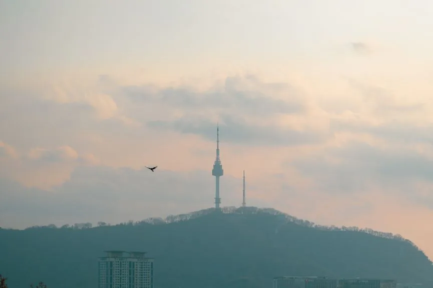
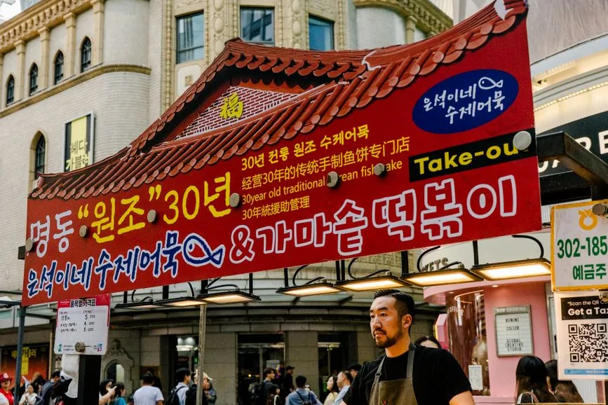

No one pays to be recommended here, and we say when a free or cheaper option wins. Our promise →
In this guide6 sections
Before the platform question, one thing has to be said, because it changes what you are buying:
You cannot visit the JSA. The Joint Security Area at Panmunjom — the blue huts, the soldiers facing each other across the line — has been closed to civilian tours since July 2023, after a US soldier crossed the border there. General-public tours have not resumed: Kyunghyang Shinmun reported in October 2026 that the UN Command has run only special tours since May 2025, open to VIPs such as senior officers and senior civil servants. Listings that say “DMZ & JSA” almost always mean a JSA museum or simulation exhibition near Imjingak, not the border zone itself.
That is not a reason to skip the DMZ. It is a reason to read the itinerary line by line before you compare prices.
| If you want… | Book on | Why |
|---|---|---|
| To stand in the blue JSA huts | Nobody can sell you this | Closed to civilian tours since July 2023; “JSA” on a listing means a museum near Imjingak |
| The cheapest full combo | KKday | Its DMZ + Gamaksan red suspension bridge tour runs around US$41.50 |
| A North Korean defector Q&A | Klook | Lists tours that include a live talk by a defector, which most itineraries don’t carry |
| Lunch, entrance fees and hotel pickup in one price | Viator | Its full-day listings commonly bundle all three |
| No shopping stop | Check the listing, on any platform | This is set per tour, not per company — see below |

The shopping stop, and what it actually costs you
This is the single biggest complaint about DMZ tours, and it is invisible in the headline price.
The numbers make it clear:
- Standard half-day tour — 3rd Infiltration Tunnel and Dora Observatory — runs about ₩55,000–₩75,000 (roughly US$40–55).
- Cheaper tours at ₩45,000–₩50,000 commonly build in a 45–60 minute stop at a ginseng centre or an amethyst factory on the way back, where the operator earns commission.
So the discount is around ₩10,000–₩20,000, and the price of it is most of an hour. Read that as an hourly rate and it stops looking like a saving. Reviewers describe the rest of the day being rushed to make room for the retail detour — less time at the tunnel, less time at the observatory.
What to do: look for “no shopping stops” stated explicitly in the listing. It appears on tours across all three platforms, so this is a per-listing check, not a reason to prefer one company. If a tour is unusually cheap and vague about the return journey, assume the gap is filled with ginseng.

Partner link · KKdayTours and tickets in Seoul on KKdayRead nextDo You Need a K-ETA for South Korea? (2026)Platform by platform, for this tour
| Klook | KKday | Viator | |
|---|---|---|---|
| Verified price point | Competitive | DMZ + red bridge ≈ US$41.50 | Full-day with lunch included |
| Defector Q&A listed | Yes | — | — |
| Hotel pickup | On some tours | On some tours | Commonly included on full-day |
| Entrance fees included | Varies by listing | Varies by listing | Commonly included on full-day |
| Free cancellation | 24 hours | Varies by listing | 24 hours |
| “No shopping” tours exist | Yes | Yes | Yes |
| We can link it | Yes | Yes | Yes |
Klook is the one to start on if you want the day to mean something beyond the viewfinder. The defector Q&A is a genuinely different product — a first-hand account rather than a guide’s summary — and it is not widely listed elsewhere.
KKday is where the sharpest verified price sits, and its DMZ-plus-red-bridge combination gives the day a second destination if the border sites alone feel thin.
Viator carries the fullest all-in packages: lunch, entrance fees and hotel pickup folded into one figure. We may earn a commission from Viator, as from the other platforms named here, so the comparison rests on what each listing shows, not on what we earn.
Why you need a tour at all
The obvious question: can you just go? Partly. Imjingak, at the edge of the zone, is reachable on your own. But the sites people actually go for — the 3rd Infiltration Tunnel and the Dora Observatory — sit inside the Civilian Control Line, and access is controlled. A guided tour is the normal way in, which is why the DMZ is one of the few places in Korea where booking a tour isn’t a convenience but a requirement.
That also explains why these sell out. Book three to seven days ahead, and earlier for weekends and peak season.
The five checks, in order
- Does the itinerary name a shopping stop? If it won’t say, treat that as a yes.
- Is “JSA” a museum? Assume it is, unless the listing is unusually explicit.
- Are entrance fees included? “Tour price” sometimes means transport and guide only.
- Half-day or full-day? Half returns you to Seoul with the afternoon still usable.
- Where does it depart from? Hotel pickup versus a single downtown meeting point changes how early you’re up.
Price is the sixth question, not the first.
 Read nextSeoul: A First-Timer's Guide
Read nextSeoul: A First-Timer's GuideWhat the day requires
- A passport. VisitKorea’s pages for the 3rd Tunnel and the Dora Observatory say visitors must bring identification such as a passport or an Alien Registration Card. Pack the passport itself, not only a photo of it.
- A reserved tour. VisitKorea says individual visits to the Dora Observatory are not allowed, and that the 3rd Tunnel must be reserved in advance. Both tours start from Imjingak Pavilion.
- Not a Monday. VisitKorea lists the 3rd Tunnel as closed on Mondays, on public holidays that fall on weekdays, and over Seollal and Chuseok; the Dora Observatory is closed on Mondays. Ask the operator which dates run around Korean holidays. Book a Tuesday to Sunday for the widest choice, and check KKday’s dates or Klook’s before you fix the rest of the week.
- Opening hours. The 3rd Tunnel is listed 9:10am to 2:40pm and the Dora Observatory 10am to 5pm, so tours are built around those hours.
- Age limits. We found no official age rule for the tunnel or the observatory; ask the operator before booking for children.
You can browse DMZ tours on Klook — the place to look for the defector Q&A version — and cross-check KKday, which holds the sharpest verified combo price. For the days either side, self-guided audio tours cover Seoul’s palaces at your own pace, and Tiqets handles standalone attraction tickets.
Two things to settle before you fly: entry, because the K-ETA waiver has an end date, and data — DMZ pickup points and Kakao Map both assume you’re online, so see the eSIM guidance for Korea or set one up before you go.
For the rest of the trip: how much a South Korea trip costs puts a day tour in proportion, Seoul for first-timers and the places worth your time in Seoul cover the city, and is the KORAIL Pass worth it? matters if you’re heading south afterwards. If you’re also going to Jeju, where to book a Jeju bus tour runs the same comparison for the island.
Frequently asked questions
Can you visit the JSA at Panmunjom in 2026?
No. JSA tours have been suspended since July 2023, when a US soldier crossed the border there, and have not resumed on any dependable schedule. Listings advertising JSA generally mean a museum or simulation exhibition near Imjingak rather than the Joint Security Area itself. The 3rd Tunnel and Dora Observatory still take reserved tours, according to VisitKorea, and operators list them as running.
Is Klook or KKday better for DMZ tours?
KKday holds the sharpest verified price, with a DMZ and red-suspension-bridge combination at about US$41.50. Klook is the one to check for tours including a live Q&A with a North Korean defector. Viator tends to bundle lunch, entrance fees and hotel pickup into one full-day price.
Do I need my passport for a DMZ tour from Seoul?
Yes. VisitKorea says visitors to the 3rd Tunnel and the Dora Observatory must bring identification such as a passport or an Alien Registration Card, and that both are visited only on a reserved tour from Imjingak Pavilion. The 3rd Tunnel is closed on Mondays and weekday public holidays, and the observatory on Mondays, so book a Tuesday to Sunday.
Do DMZ tours have shopping stops?
Many of the cheaper ones do. Tours at 45,000 to 50,000 won often include a 45 to 60 minute stop at a ginseng centre or amethyst factory, while tours without one generally run 55,000 to 75,000 won. Look for no shopping stops stated on the listing: it is set per tour, not per platform.
How much does a DMZ tour from Seoul cost?
A standard half-day tour covering the 3rd Infiltration Tunnel and Dora Observatory runs roughly 55,000 to 75,000 won, or about US$40 to 55. Cheaper tours usually recover the difference with a retail stop.
How far in advance should I book a DMZ tour?
Three to seven days is the usual advice, and further ahead for weekends and peak season. These tours sell out more often than most, because access to the sites is controlled and seat numbers are limited.
Can you visit the DMZ without a tour?
Only partly. Imjingak, on the edge of the zone, is reachable independently, but the 3rd Infiltration Tunnel and Dora Observatory sit inside the Civilian Control Line where access is controlled. A guided tour is the normal way to reach them.
Sources & further reading
- Kyunghyang Shinmun, 22 October 2026: UN Command special Panmunjom tours since May 2025
- VisitKorea: the 3rd Tunnel (reservation, ID, hours, closed days)
- VisitKorea: Dora Observatory (reserved tour only, ID, hours, closed Mondays)
- Klook, KKday and Viator DMZ tour listings, inclusions and pricing, 2026
- Traveller reports of ginseng and amethyst shopping stops on discounted DMZ tours
Access rules at the DMZ change with the political situation, sometimes at short notice, and tours can be cancelled on the day. Inclusions and prices vary per listing. Check the specific listing, and your operator’s latest advice, before booking. This article contains affiliate links to the platforms we have a relationship with; if you book through them we may earn a commission at no extra cost to you.
Keep reading on Gently Yonder
Seoul: A First-Timer's GuideThe royal palaces, Bukchon Hanok Village, Gwangjang Market, and a DMZ day trip.
 Best eSIM for South Korea (2026)How to choose a Korea travel eSIM — coverage, data plans, and the pick for most trips.
Best eSIM for South Korea (2026)How to choose a Korea travel eSIM — coverage, data plans, and the pick for most trips.
 How Much Does a South Korea Trip Cost?A realistic 2026 budget — flights, stays, food, T-money, the KTX, and where costs surprise you.
Where to Book a Jeju Bus TourKlook for small-group English-only tours with no shopping stops; KKday for the widest choice of routes.
How Much Does a South Korea Trip Cost?A realistic 2026 budget — flights, stays, food, T-money, the KTX, and where costs surprise you.
Where to Book a Jeju Bus TourKlook for small-group English-only tours with no shopping stops; KKday for the widest choice of routes.